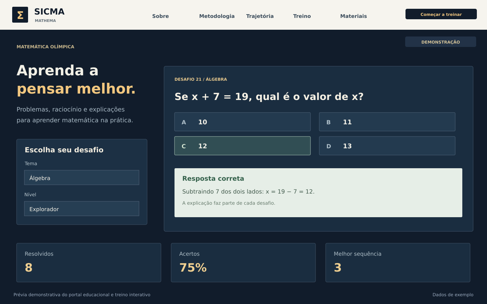

Portal educativo e treino interativo
Matemática para explorar, treinar e compreender.
Um portal educacional com conteúdos, desafios por tema e nível, explicações e progresso local.

O problema
O que precisa mudar?
Quem estuda matemática precisa de um caminho claro para conhecer os conteúdos, praticar e entender a solução de cada desafio.
A solução
O que foi construído.
Um portal web independente que reúne apresentação institucional, metodologia, recursos e treino interativo com 25 problemas autorais.
Como funciona.
Escolher
O estudante filtra um tema e um nível para começar.
Praticar
Seleciona uma alternativa e recebe correção com explicação.
Acompanhar
Respostas, acertos e sequências ficam guardados no próprio dispositivo.
O que foi desenvolvido.
- 25 desafios autorais de matemática
- Filtros por tema e nível
- Correção imediata com explicação
- Sequências e estatísticas locais
- Materiais de estudo para download
- Layout responsivo e navegação por teclado
Conheça a tecnologia do projeto
A engenharia por trás.
Interface em HTML, CSS e JavaScript com servidor Node.js sem dependências externas. O progresso é salvo no localStorage, sem contas ou envio de respostas para um banco.
HTML · CSS · JavaScript
Referências do projeto: README.md · package.json · public/index.html · public/app.js · server.js.
O estágio atual. O próximo passo.
Recriação independente de um portal educacional, sem recuperação integral da publicação anterior e sem inscrições oficiais. A prévia do portfólio foi criada por código para ilustrar o produto, com estatísticas de exemplo.
Possibilidades de evolução
Evoluir o catálogo de desafios e os materiais, com revisão pedagógica. Funcionalidades de conta ou sincronização devem ser definidas conforme a necessidade.
Próximo projeto
ClientFlowVamos conversar
Seu negócio tem uma história.
Vamos construir o próximo capítulo.
Conte sua ideia ou o que está dificultando a rotina. A gente ajuda a definir por onde começar.
Primeiro, entendemos. Depois, propomos.